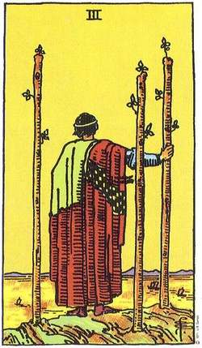

Bugünkü Tarot Kartınız
DEĞNEK ÜÇLÜSÜ
Bugün seçtiğiniz kart "Değnek Üçlüsü", yeni fırsatların ve genişleyen ufukların bir işareti. Bu kart, girişimlerinizi ileriye taşımak için cesaret ve kararlılık sergilemeniz gerektiğini vurgular.
Kartın Anlamı:
- Genel: Yeni başlangıçlara açık olun ve cesurca adım atın. Bu dönemde fırsatlar sizi bekliyor, onları değerlendirmek için hazır olun.
- Aşk: İlişkinizde yeni bir döneme geçiş için kendinizi hazırlayın. İleriye yönelik güzel gelişmeler için cesurca hareket edebilirsiniz.
- Kariyer: Yeni projelere ve iş fırsatlarına odaklanın. Kariyerinizdeki potansiyelinizi en iyi şekilde değerlendirmek için cesaret ve kararlılık gerekebilir.
- Sağlık: Zihinsel ve fiziksel sağlığınıza özen gösterin. Yenilikleri kucaklayın, sağlığınızda olumlu değişikliklere yer açın.
Unutmayın, tarot kartları size rehberlik eder ancak asıl gücünüz kendi seçimlerinizde yatar.